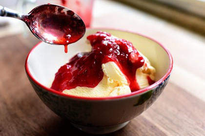

ICE CREAM WITH CRANBERRY SYRUP
INGREDIENTS :
- 1¼ cups superfine sugar
- 1 cup water
- 6 ounces fresh cranberries
- TO SERVE:
1 or 2 tub good vanilla ice cream (or white chocolate ice cream)
METHOD :
- To make the syrup, put the sugar and water in a pan and give a good stir, but do not stir thereafter: if you stir a syrup as it cooks it crystallises and goes gritty; swirling the pan is permissible, however..
- Put the pan on the stove and dissolve the sugar in the water over low heat, then add the berries and bring to the boil, letting the pan boil until the syrup reddens and the berries pop; this will take anything between 5 and 10 minutes depending on the properties of the pan and whether the cranberries went in fresh or frozen. If you’re watching the pan, it can seem to take longer.
- Remove to a jug, and serve warmish over cold, cold ice cream.